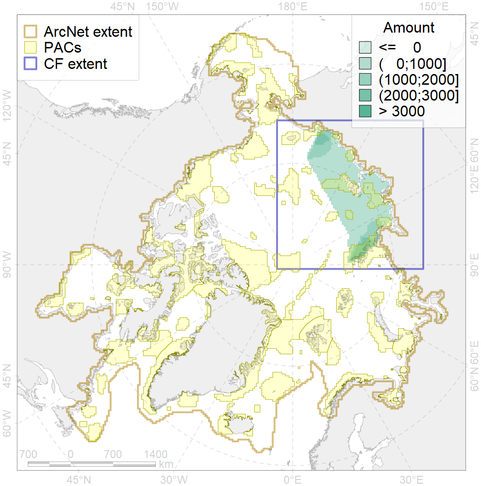
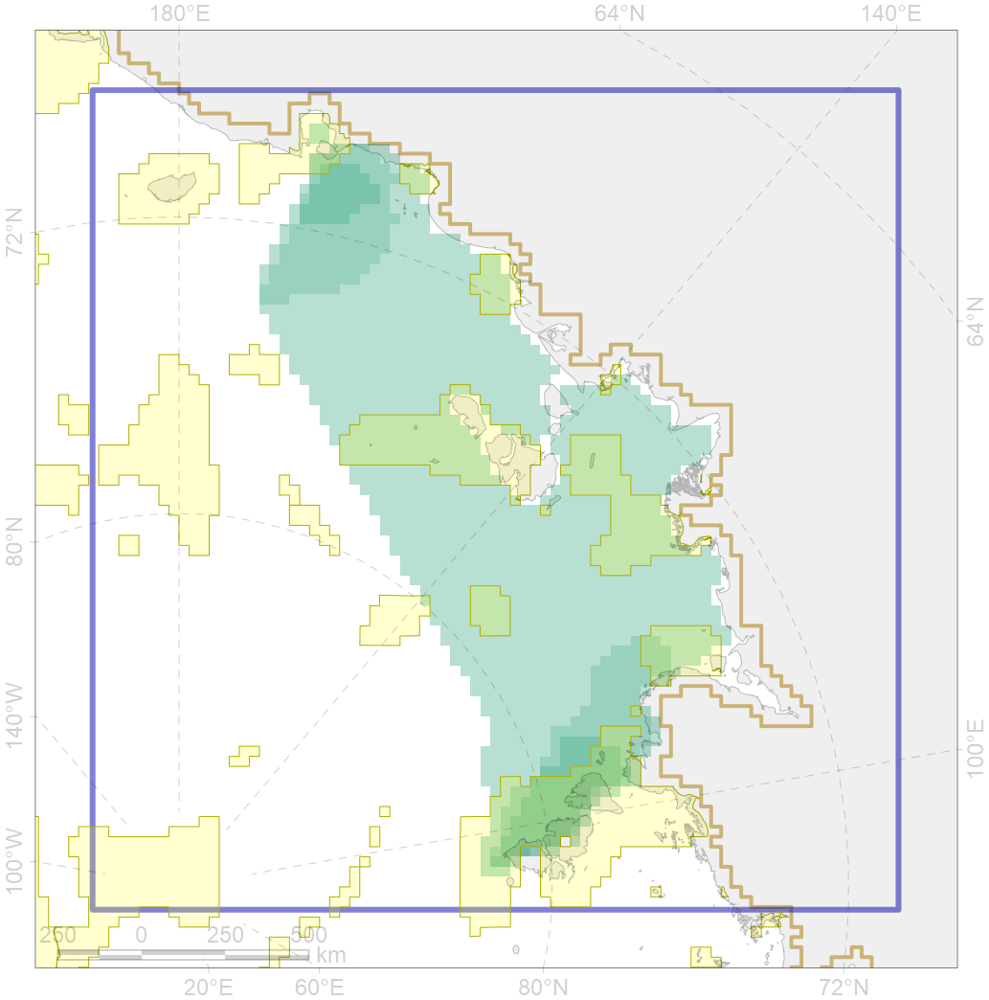

9012

| CF ID | 9012 |
| CF Name | polar bear of the LV (Laptev Sea) subpopulation distribution |
| Time Period | 1958-2017 |
| Source(s) | Belikov, 2011; Platonov, 2018 |
| Seasonality | January - December |
| Depth Horizon | 0 |
| Methodology | Field data, expert opinion, simulation results. |
| Author Name | Evgeniya Melikhova, Stanislav Belikov |
| Notes | |
| Conservation Target Set in the Scenario | 0.264 |
| Conservation Target Achieved in the Scenario | 0.319 (Scenario: 120.9%) |
| PAC ID | Proportion in the PAC | Contribution to ArcNet Target Achievement | PAC’s Contribution to the Achieved Target |
|---|---|---|---|
| 8 | 1.0% | 3.6% | 3.0% |
| 9 | 0.1% | 0.3% | 0.2% |
| 10 | 0.5% | 1.4% | 1.2% |
| 11 | 1.9% | 6.9% | 5.7% |
| 12 | 2.4% | 8.0% | 6.6% |
| 13 | 2.6% | 9.5% | 7.9% |
| 14 | 22.5% | 73.7% | 60.9% |
| 82 | 0.0% | 0.0% | 0.0% |
| 83 | 0.1% | 0.2% | 0.1% |
| inner | 31.1% | 103.5% | 85.6% |
| outer | 68.9% | 17.4% | 14.4% |